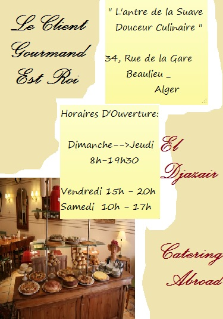
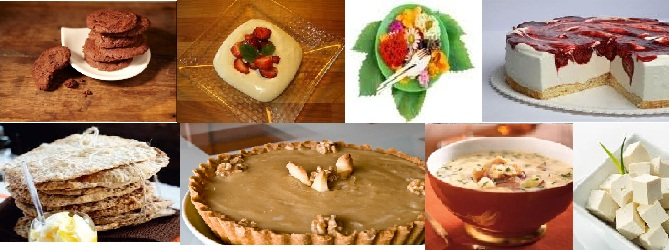

EL DJAZAIR CATERING ABROAD est une entreprise gérante de boutiques de traiteur. Fondée en 2004, elle opère dans 3 wilayas : Alger, Oran et Annaba;
en l'occurence.
Chez EDCA On confectionne tous les plats que vous désirez avec une touche de douceur exquise , et d'originalité du goût irréprochablement unique.
Besoin d'une pause gourmandise ?! El-Djazair Catering Abroad vous propose son service de commande en ligne avec LIVRAISON GRATUITE !
Vous trouverez dans nos boutiques divers produits alimentaires et plus particulièrement des plats exotiques issus des traditions asiatiques et aussi des mets européens ;
Vous constaterez que notre entreprise prône le partage de la culture culinaire et l'ouverture à la gastronomie étrangère.

Profitez des douceurs délectueuses de nos saveurs culinaires, les chefs-d'oeuvre de nos cordons bleus ; et surtout n'hésitez pas à nous adresser vos commentaires.
Nous oeuvrons quotidiennement à perfectionner nos services ; de ce fait Vos Remarques et critiques seraient les bienvenues !